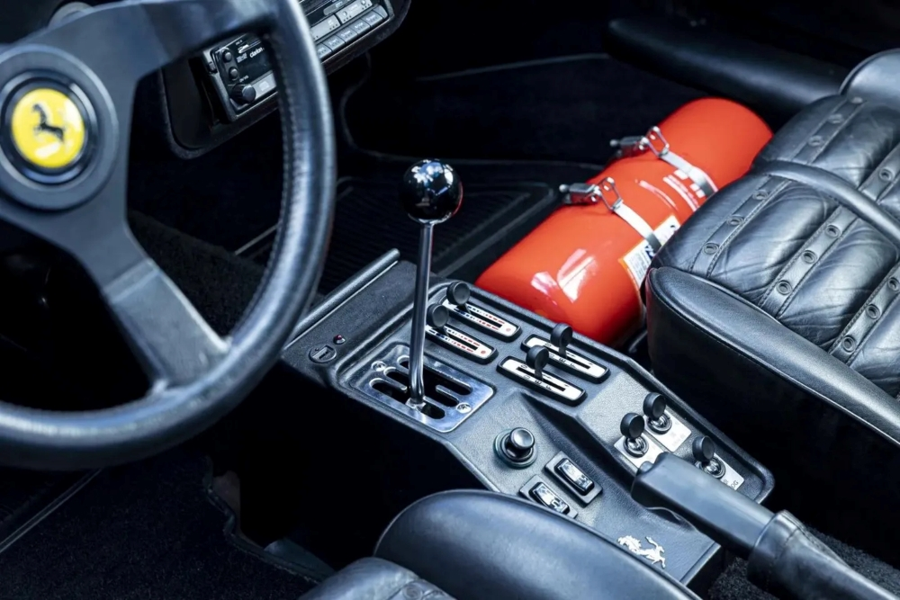

The 288 is a staple in Ferrari's heritage, and still is a stunning piece of art.
With only 272 units produced in its 3-year run from 1984 to '87, and designed by Nicola Materazzi and Leondardo Fioravanti at Pininfarina, it is a bit of a hidden gem, so to speak.
One of the earlier twin-turbocharged models, the car's V8 brings it from 0 to 100km/h in 4.8 seconds - not remarkable by today's standards, but quick comparitvely to others like it during its time. The engine produces 394bhp at 7000 revs and about 500Nm of torque at 3800.

The 288 GTO's five-speed manual transmission can bring it to a top speed of 304km/h, and of course it is accompanied by a glorious gated shifter which adds even more amazing sounds to the driving experience.